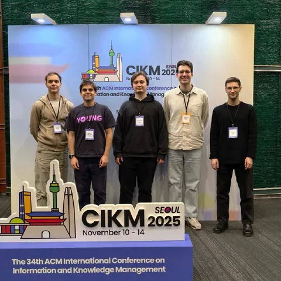

С 10 по 14 ноября в Сеуле проходит CIKM 2025 — одна из крупнейших конференций на стыке ИИ, машинного обучения и баз данных.
Мы уже рассказывали в @RecSysChannel о ожидаемых темах этого года, а теперь делимся впечатлениями команды рекомендательных технологий Яндекса от второго дня конференции.
Сергей Лямаев:
Сегодня мне показались интересными две статьи от Kuaishou (Pantheon и MARM), InterFormer от Meta*, серия статей от Airbnb (Beyond Pairwise Learning-To-Rank At Airbnb; Learning to Comparison-Shop; Maps Ranking Optimization in Airbnb). На постерной сессии обменялись опытом с ребятами из ресёчерской команды Snapchat (их постер) про обучение семантических ID, они тоже пробуют имплементировать OneRec.
Николай Савушкин:
Понравилась статья Action is All You Need от Kuaishou (очень популярная платформа коротких видео в Китае). Удалось пообщаться после доклада с автором, уточнить детали, которых не было ни в статье, ни в докладе.
Также подошли к автору MARM и расспросили подробности, которые нигде не были упомянуты.
Александр Михеев:
Посетил занимательный доклад по статье InstANNS от группы из Сеульского университета. Для задачи приближенного поиска ближайших соседей предлагают перенести часть фильтрующих вычислений в контроллер SSD при помощи хитрой NVMe-операции, чтобы гонять меньше данных в память и повысить пропускную способность диска.
Сама идея использования вычислительных ресурсов диска не является новой, и такой перенос нагрузки выглядит разумным и уместным. А забавный факт, к сожалению, в том, что эта хитрая NVMe-операция пока не существует и не поддержана ни одним из существующих SSD-дисков. Поэтому авторы её запрограммировали в специальном NVMe-симуляторе и зарепортили потенциальный профит :)
Кстати — на фото те самые ребята, которые принесли нам новые заметки с места событий.
ML Underhood
* Компания Meta признана экстремистской; её деятельность в России запрещена.
